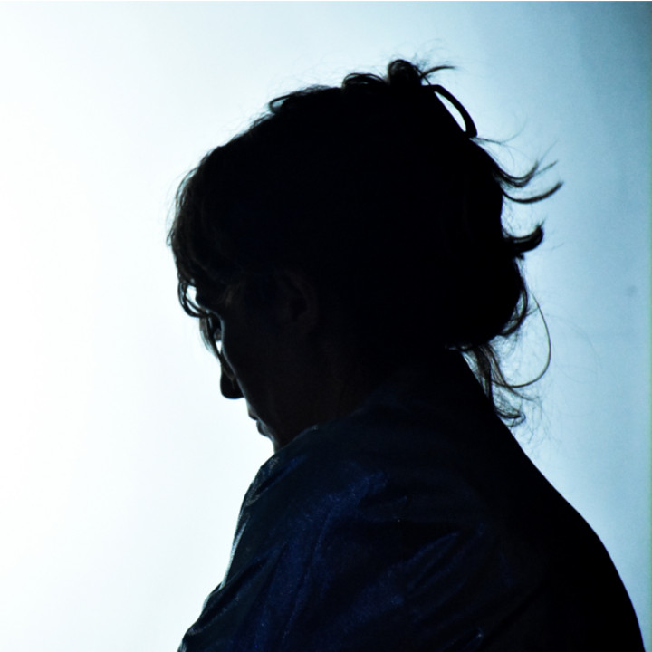
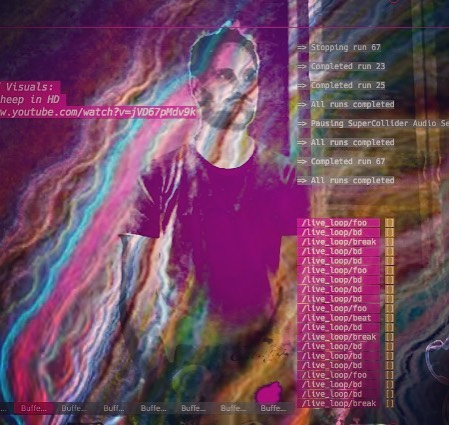

Graham Dunning uses TidalCycles alongside his Mechanical Techno contraption in an unconventional hybrid performance, which allows room for error, inconsistency and play. The performance highlights similarities in visual and sonic presentation between the two different approaches.
Live cinema coding, experimental music and motion typographics of the code edited live. Cinemato-graphic and sound collage of unfinished expressions of the idea of the future in Mexico City. The project is created with the algorithmic possibilities of TidalCycles and Processing, the premiere of this live act took place in the last edition of Mutek Montreal 2018.
The Cybernetic Orchestra is a participatory live coding ensemble that employs a shifting and heterogenous mix of languages and configurations to make music. Multi-linguality and collaborative interfaces and practices have become definitional for the group. For ICLC 2019 we propose a double roulette in which orchestra members will take turns modifying either notations that produce music or notations that produce generative visuals in conjunction with that music. Our performance will use the Estuary web-based platform, and showcase new and developing features of that platform, including but not limited to: the Punctual language for live coding synthesis graphs, new notations for generative visuals, graphical interfaces that blur the line between text programming and GUI-style interaction, responsive and assistive displays, etc.
Safeguard is an autonomous live-coded performance. The performer is a machine learning algorithm, Cibo, trained to perform (read, change, execute, and repeat) Tidal code. Cibo was trained on sequences of Tidal code, in this way, the implementation of the algorithm has no knowledge of sound. This separation of code and sound resulted in a trained algorithm that recognizes how a human performer would change their code from the human’s perception of sound. Even at this early stage of development several intriguing personified occurrences have cropped up. Further details, implementation methods, and philosophical musings of this research are in our paper submission. We gratefully acknowledge the support of NVIDIA Corporation with the donation of the Titan Xp GPU used for this research.
Street Code is a series of performances of live coded electroacoustic music in public, half public, and/or open
space. It is about taking electroacoustic music from its usual venues and bringing it to unexpected places where
it can enter in dialogue with the city space, both physical and social, and with the architecture of the city.
Finding nice spots to play where the sound could be interesting, and the projection of the codes painting the
walls with musical scores of light created on the fly is what Street Code is all about.
Street Code is a performance for one or many live coders, for a stage, for a tree, for a street, for an alley,
park, or subway station. With a huge sound system or a small usb speaker and for any duration of time.
An Audio-Visual Live Coding Performance Combining Choreographic Thinking and Algorithmic Improvisation.
This piece choreographs the movements in graphic and sound design carried out by human and non-human performers interacting
on themes of hybridity, circulation, and the permeability of language. By adding software agents, the piece expands a
previous composition for two improvising performers, one live coding a browser window and another live coding audio, which
used the circle as a base choreographic concept for how we perceive relationships between users, software agents, the
computing environment, and society at large. We also extended a shared vocabulary to include these concepts and have
moved from strictly dynamic percussive sounds and vocal that evoke sensations of vibration, rhythm, fast movement to
include fluid-like sounds and images, harmony, gradients, mixed non-linear horizontal and vertical arrangements, and
other related elements.
The length of the performance has been extended from the originally presented at the International Live Interfaces
Conference 2018 [1]; and will be excerpted to match the constraints of this conference.
A performance that extends the live coding act to outside of the software IDE, by integrating real time assembly and manipulation of electronic circuits to the traditional “show us your screen” code display, while live coding Arduino boards and physically manipulating speakers. squareFuck unveils a process of failure. The inability to perform a task is, ultimately, the unwillingness to leave things behind.
The CKalcuƛator is a lambda-calculus arithmetic calculator for the piano. It is the fourth sub-system of the CodeKlavier
project whose goal is to become a domain specific programming language that enables a pianist to live code by playing
the piano (Veinberg and Ignacio 2018).
In this performance, duo Off<>zz - Felipe Ignacio Noriega (live coding) and Anne Veinberg (piano), will give a performance
in their standard formation of live coding in SuperCollider and piano playing but with the adjustment of Veinberg using
the CKalcuƛator system and thus composing and evaluating simple arithmetic operations and number comparisons with her
piano playing. The results of these operations are broadcast via OSC, enabling the laptop to utilize them as a
combination of number values, boolean switches, audio input and conditions for the live coded algorithms.
Typing is one the main physical skills involved in text-based livecoding. The ‘classical’ interface for this is the
‘qwerty’-keyboard for 10 finger blind typing. In search for an alternative interface allowing to get away from the
laptop, but still code via a text interface, I came across the commercial Twiddler one-handed (twelve-button) keyboard.
To learn how to use it, I needed practice materials to study the chording for writing code and created an interface that
allows for playback of recorded livecoding scripts, which I then need to type and execute line by line. The interface
is available at https://github.com/sensestage/SuperColliderTwiddler.
At this ICLC, I will perform from a script of RedFrik’s performance “Livecoded supercollider, well practiced” at the
LOSS Livecode Festival in Sheffield on July 20th, 2007, as found on Fredrik Olofsson’s website
(https://www.fredrikolofsson.com/f0blog/?q=node/155). To make the script suitable for performance in 2019 within the
etude-environment, minor adjustments were made in the code to ensure that it would execute and to reduce the line
length to fit into the graphical interface.
Moving Patterns is a duet for dancer and coder. It allows a visual score for the dancer to be created in real time through the Haskell based live coding language TidalCycles and special image language DanceDirt. The audience sees the performers react and change to the score as it develops through coding and movement on stage.
Scorpion Mouse is a duo that explores how algorithmic music and a live vocalist can have a symbiotic relationship and
improvise together. May improvises over the music livecoded by Jason. Jason gets his phrasing cues, dynamics, and transitions
from May’s singing. Similarly, information from Jason’s livecoding system is sent to May’s digital voice processor so that
rhythmic and harmonic effects are in time and in key with the livecoded music, while the amplitude May’s voice affects the
amplitude and filtering of the livecoded beats so that there is space while she is singing, and so the beats are full force
when she is not. In this way Scorpion Mouse are free to explore vast musical territories while maintaining organic unity.
Musically, Scorpion Mouse has influences from electronic styles like trance, drum and bass, IDM, and ambient as well as
influences from electric styles like jazz, soul, rock and pop. Their music is built from three layers: On the bottom, rhythmically
complex percussive beats. In the middle, lush synth harmonies, and on top, ethereal melodic vocals.
Transit is an audiovisual work for live coding. Transit explores computer and cultural processes, which are created and destroyed from their definition, in words or codes, and are transformed in time, by their diverse interactions. The work is inspired, in particular, in Lakutaia Lekipa ́s life, known as the last woman carrier of the Yaganes language and traditions, pre-Hispanic culture of the extreme south of Chile and Argentina. Thus, in a poetic exercise, the writings codes carry messages for the execution in real time of the sounds and graphics that build the multimedia sequences.
SuperContinent is an intercontinental live coding ensemble, with one member per continent. The ensemble rehearses online, via the evolving Estuary platform for collaborative live coding, bringing together artists of quite different sensibilities and exposing the distinctive requirements of live coding ensembles that are highly and definitionally geographically distributed. Our ICLC 2019 performance will bring together the live coding of patterns, the live coding of synthesis graphs (via the new Punctual language for live coding), and the live coding of generative visuals.
The access to crowdsourced digital sound content is becoming a valuable resource for music creation and particularly music performance. However, finding and retrieving relevant sounds in performance leads to challenges, such as finding suitable sounds in real time and using them in a meaningful musical way. These challenges can be approached using music information retrieval (MIR) techniques. In this session, the self-built system MIRLC (Music Information Retrieval Live Coding), a SuperCollider extension, will be used to access audio content from the online Creative Commons (CC) sound database Freesound. The use of high-level MIR methods is possible (e.g., query by pitch or rhythmic cues). This live audio stream of soundscapes from crowdsourced audio material will be combined with a vintage Roland MC-09 used as a drum machine.
This performance will showcase the creative possibilities of Nanc-in-a-Can1, an open source SuperCollider library that we recently developed. Its main focus is the creation and modification of temporal canons (pioneered by Conlon Nancarrow) in a live and interactive setting. We will be exploring the formal and rhythmic aspects of the temporal canon form as well as the application of canonic data to sound synthesis and graphics generation, in order to generate timbral canonic structures that would be “voicing” our pitch based canons, thus generating canons within canons.
...that Enchantress who has thrown her magical spell around the most abstract of Sciences and has grasped it with a
force which few masculine intellects (in our own country at least) could have exerted over it. (Babbage, 1843)
Contemporary Witchcraft is a performance project by Project Group: a multimedia inter-continental feminist performance group.
The performance combines sound, video and movement in a reflection on the interweaving of narratives on programming, women's
bodies and mysticism. The performance is telematic with each performer located on a different continent: in Australia, Spain
and South Korea.
Each performer transmits a different medium which the others respond to, to develop an improvised performance. Knotts live
codes music, Cas uses motion tracking devices to transmit movement data and Bahng interweaves archive video footage with
live video streams of Knotts and Cas performing. Cas and Bahng’s video streams are projected in the performance space
alongside the code interface and audio of Knotts.
Narrative threads on programming, mysticism and digitally mediated embodiment act as stimulus to the improvisation,
freely interwoven, meshed, meeting and diverging. The performance is condensed framework, a meeting of mediatised
cultures, a relation between three mediated bodies distributed in space in a durational awakened process.
iCantuccini plays ‘Greatest Hits’ only! In The Mandelbrots Experience they try to capture and recreate the original
spirit of the live coding boy band Benoît and the Mandelbrots in an unforgettable live show, performing all their
rememberable tunes from The Mandelbrots 2016 Release. Get vegetal with Gurke (Germanfor ‘carrot’) and enjoy the bright
future envisioned in Hello Tomorrow.
Move your bodies to Tranceposition and Tranceportation (which sound awfully alike).
Enjoy the retro-futuristic sounds of Classic or experience a stroll through the Mandelbrots’ hometown with Karlsruhe (‘Charles, remain!’).
On top of the classic sound you’ll get the classic Mandelbrots look, the authentic stage outfits and the same visuals backdrop
behind the code projection The Mandelbrots used without a change since 2012.
As iCantuccini cannot perform their full show at ICLC they will play a medley of the audience’s two favorite tracks.
Select your favorites until under this URL and listen to the live coded recreation by the first Mandelbrots cover band
ever (voting closes 5 minutes before the show).

Alba G. Corral (b. 1977 – Madrid) based in Barcelona is a Visual Artist and creative coder based in Barcelona. With a background in computer engineering, Corral has been creating generative art using software and coding for the past decade. Her practice spans across live performance, video, digital media and installation, exploring abstract narratives and expressing sensitivity and taste for colour. By combining generative systems with improvised drawing techniques, her digital language becomes organic, creating mesmerising digital landscapes. Corral is known for her stunning live audio-visual performances where she integrates real-time coding and drawing in collaboration with musicians. Her works has been exhibited at festivals and events in Europe, México, Japan & EEUU.

Dr Sam Aaron is a Research Associate at the University of Cambridge Computer Laboratory. He is a live coder, who strongly believes in the importance of emphasising, exploring and celebrating creativity within all aspects of programming. Having worked on a number of widely used open-source platforms and tools for creative coding, Sam’s most recent creation is Sonic Pi, a music live coding environment used to teach programming within schools. Sam has taken inspiration not only from his familiar territories of computer industry and academia but also from the arts, a combination he now believes to be essential for the development of well-researched, creative, innovative and practical ideas in this field.